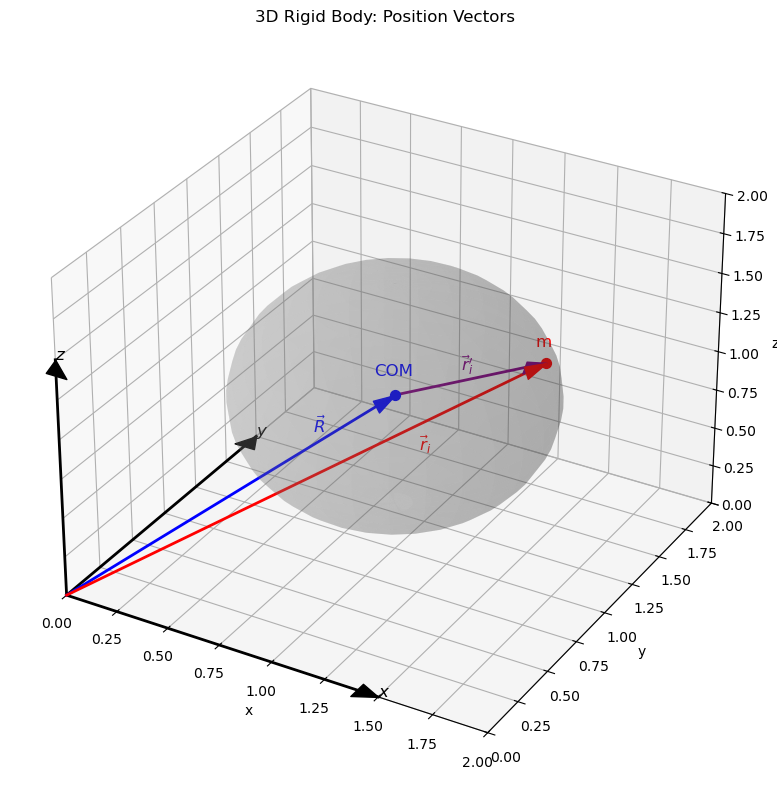

C2.3 Angular Momentum#
C2.3.1 Spin and Orbital Angular Momentum: A Quick Recap#
In the previous phase, we introduced two types of angular motion:
Orbital angular momentum: From the motion of the center of mass (CM) of an object around an external point.
Spin angular momentum: From the rotation of the object around its own CM.
Back then, we kept things simple—usually assuming fixed axes or symmetric shapes. But in the real world, objects can be asymmetric, spinning about arbitrary axes, while also moving through space. Time to go deeper.
C2.3.2 Objective#
Our goal in this lesson is to understand how to describe the full angular momentum of a rigid body when it’s both translating through space and rotating—and not just in simple, symmetric cases.
Up to now, we’ve worked mostly with spin around fixed axes, and occasionally mentioned orbital angular momentum. But to analyze real-world motion—whether it’s a spinning satellite tumbling in space or a football flying and spinning through the air—we need tools that go beyond simple scalar quantities.
By the end of this lesson, you should be able to:
Separate a rigid body’s angular momentum into orbital and spin components.
Understand how angular velocity relates to the spin angular momentum of an object.
Derive and use the moment of inertia tensor, which captures how mass is distributed relative to different axes of rotation.
Express spin angular momentum as a matrix-vector product:
\[ \vec{L}_{\text{spin}} = \mathbf{I} \cdot \vec{\omega} \]
This sets the foundation for understanding complex rotation in 3D and leads directly into our upcoming work on principal axes and gyroscopic motion.
C2.3.3 Total Angular Momentum of a Rigid Body#
Let’s consider a rigid body made up of many particles. The total angular momentum about a fixed origin \( O \) is:
We now split each particle’s position and velocity into two parts (see Figure below for visual aid):
\( \vec{r}_i = \vec{R} + \vec{r}'_i \): position of particle = CM position + position relative to CM
\( \vec{v}_i = \vec{V} + \vec{v}'_i \): velocity of particle = CM velocity + velocity relative to CM

Plug into the expression for \( \vec{L} \):
Expanding this:
Now simplify:
\( \sum_i m_i \vec{V} = M \vec{V} \) → total mass times CM velocity
\( \sum_i m_i \vec{r}'_i = 0 \) by definition of CM
\( \sum_i m_i \vec{v}'_i = 0 \) for rigid body (no net internal motion)
If we are not convinced about the statements of the later two, we can show it:
The angular momentum is then:
This is the key result:
The first term is orbital angular momentum (CM motion).
The second term is spin angular momentum (rotation about the CM).
C2.3.4 Modeling the Spin Term with Angular Velocity#
For a rigid body, the velocity of a point relative to the CM is (all particles will have the same angular velocity):
So the spin term becomes:
This double cross product is messy but standard using the triple product expansion (also known as Lagrange’s formula):
With that, we get
We now define a linear transformation that maps \( \vec{\omega} \) to \( \vec{L}_{\text{spin}} \). This is done using a tensor object: the moment of inertia tensor.
C2.3.5 Deriving the Moment of Inertia Tensor#
Let’s write this transformation in component form:
where the moment of inertia tensor \( \mathbf{I} \) has components:
Or, in matrix form:
This tensor captures how mass is distributed in all directions. It’s a 3×3 symmetric matrix and generalizes the scalar moment of inertia to arbitrary shapes and axes.
Box 1
Verify the above by calculating the x-component of the angular momentum using Equations 1 and 2 separately and compare the two results.
NOTE: The diagonal terms in the moment of inertia tensor are called moment of inertia, while the off-diagonal terms are called products of inertia.
C2.3.6 Summary: What You Now Know#
The total angular momentum of a rigid body is:
\[ \vec{L} = M \vec{R} \times \vec{V} + \mathbf{I} \cdot \vec{\omega} \]The first term is from CM motion (orbital), the second from internal rotation (spin).
The moment of inertia tensor maps angular velocity \( \vec{\omega} \) to angular momentum.
For symmetric shapes and rotation about principal axes, the tensor becomes diagonal and easy to work with.
C2.3.7 Up Next#
In the next phase, we’ll explore how to diagonalize the inertia tensor, find principal axes, and understand why rotating bodies sometimes behave so weirdly (hello, intermediate axis theorem aka known as the tennis racket theorem 👀).